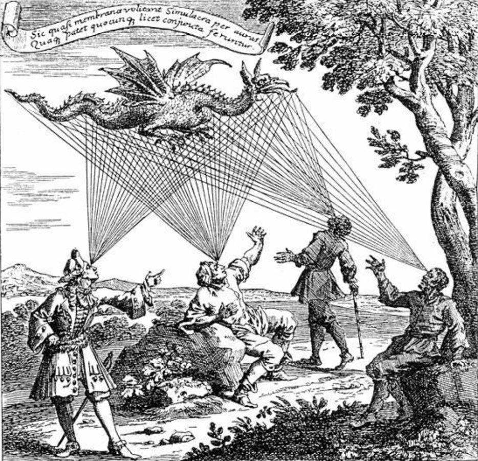
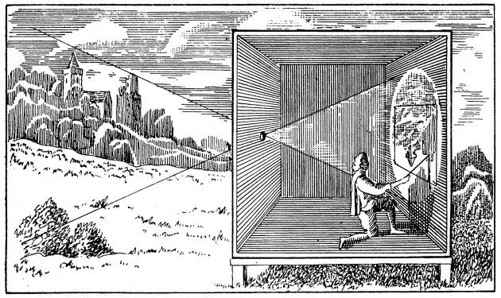
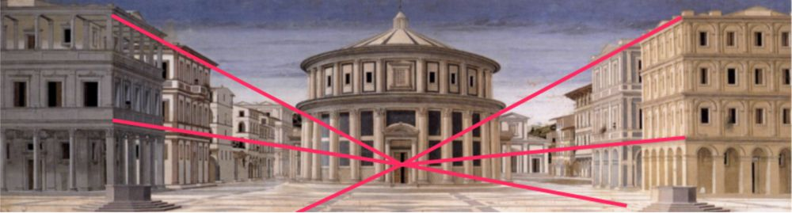
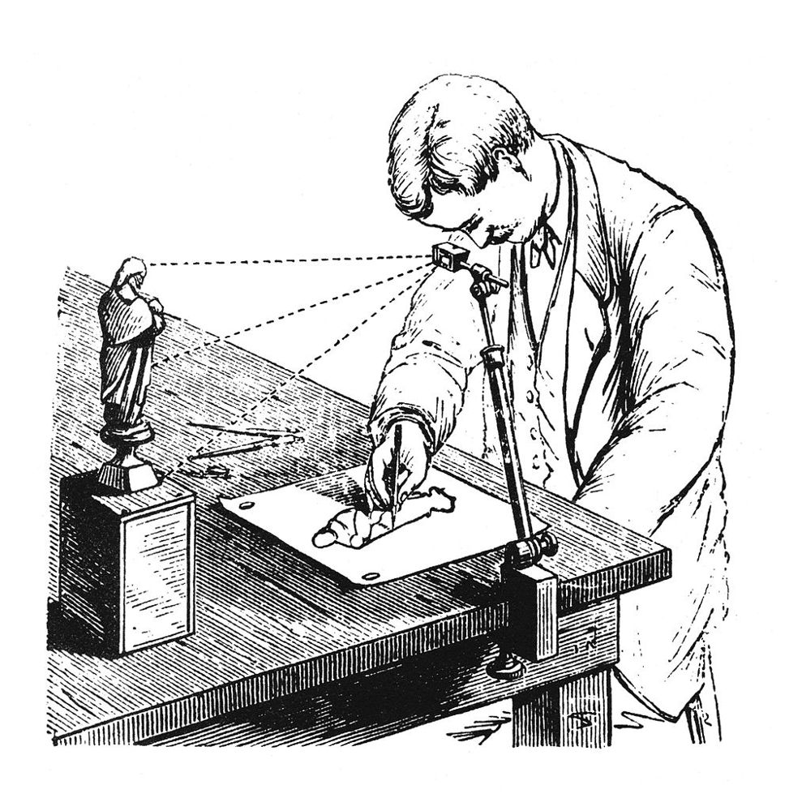
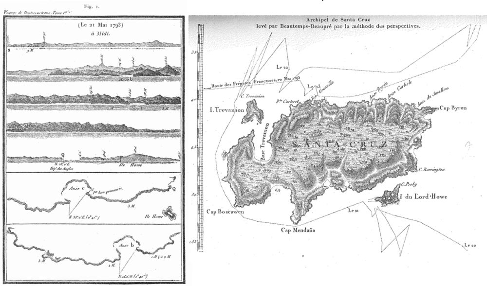
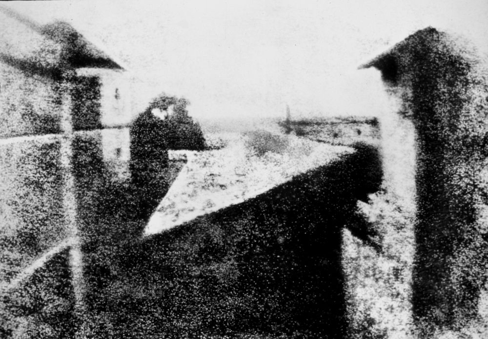
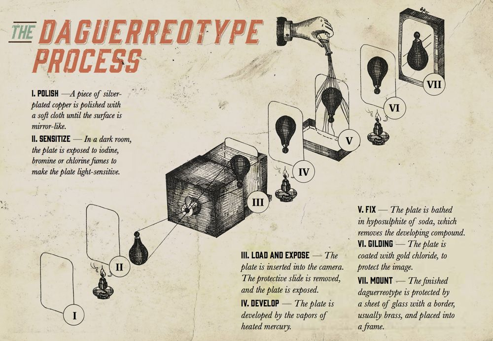
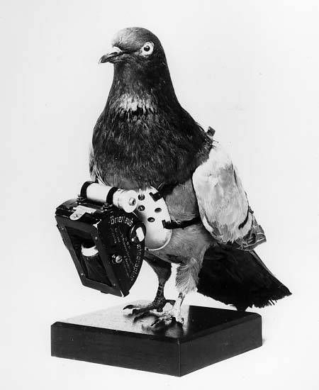
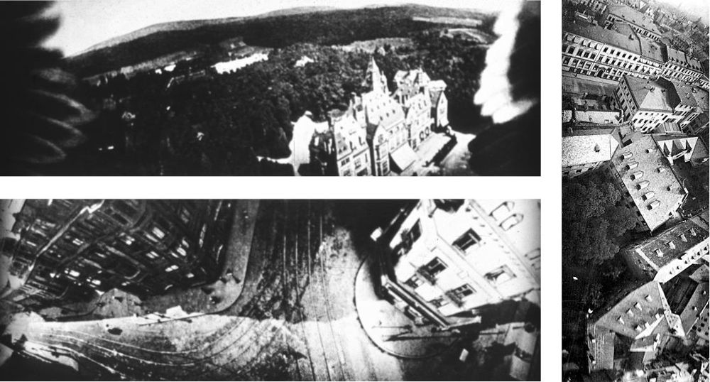

3D pose problem
- 1615Snellius
- 1773Lagrange
- 1841Grunert
Photogrammetry is the science or technique for obtaining reliable information on the natural environment or physical objects by recording, measuring and interpreting photographic images or produced by electromagnetic radiation or other phenomena.
The name comes from the Greek photos (light), gramma (something written or drawn) and metron (measure).

Known in China around 500 BC, then described by Aristotle (350 BC), Al-Haytham (around 1000) and Leonardo da Vinci (around 1500).

Ludi rerum mathematicarum and Descriptio Urbis Romae.
Tries to determine the painter's eye point from a perspective painting.

Adds a lens to the camera obscura.
First mathematical theory of the camera obscura.
An optical drawing aid, later patented by Wollaston in 1806.

Topographic map of a Swiss mountain range using perspective drawings.
Hydrography: coastline maps drawn during expeditions from angular and distance measurements.


A “gift to the world” from the French Academy.

Metrophotography.
The Royal Prussian Institute for Photogrammetry.
The ancient ruins of Persepolis.
Publication of the first photogrammetry manual.
Rectified photographs.


The geometric problems at the heart of today's 3D Computer Vision were posed — and often solved — long before computers.
and projective reconstruction
AliceVision builds on these foundations — open source, for anyone to test, analyze and reuse.
Explore the pipelines →